Etiquetas Estructurales
Las etiquetas estructurales permiten organizar una pagina web de forma semantica.
Estas etiquetas indican que tipo de contenido contiene cada parte del documento.
Se escriben entre simbolos menor y mayor que (< >).
La mayoria tienen etiqueta de apertura y etiqueta de cierre.
<header>
Definicion: Representa la cabecera de una pagina o de una seccion.
Apertura y cierre:
Se abre con <header> y se cierra con </header>.
Para que sirve: Contiene titulos, logos o menus principales.
Sintaxis basica:
<header>
<h1>Titulo</h1>
</header>
Captura visual:
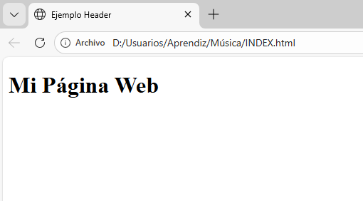
Buenas practicas: No usar multiples header sin sentido.
Debe contener informacion introductoria.
<nav>
Definicion: Define un bloque de navegacion.
Apertura y cierre:
<nav> ... </nav>
Para que sirve: Contiene enlaces internos o externos.
<nav>
<a href="#">Inicio</a>
</nav>
Inicio | Contacto | Ayuda
Captura visual:
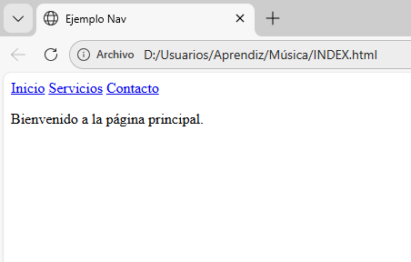
Buenas practicas: Usar listas <ul> para organizar enlaces.
<main>
Definicion: Representa el contenido principal del documento.
Apertura y cierre:
<main> ... </main>
Para que sirve: Contiene la informacion mas importante de la pagina.
<main>
Contenido principal
</main>
Captura visual:
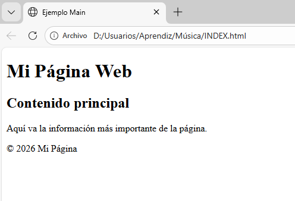
Buenas practicas: Solo debe existir un <main> por pagina.
<section>
Definicion: Agrupa contenido relacionado tematicamente.
Apertura y cierre:
<section> ... </section>
<section>
<h2>Titulo</h2>
</section>
Captura visual:
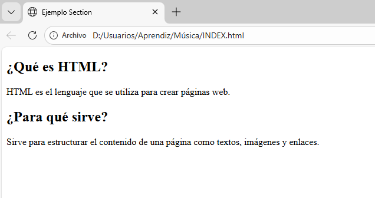
Buenas practicas: Cada section debe tener un encabezado.
<article>
Definicion: Representa contenido independiente.
Apertura y cierre:
<article> ... </article>
Para que sirve: Usado en blogs, noticias o publicaciones.
Captura visual:
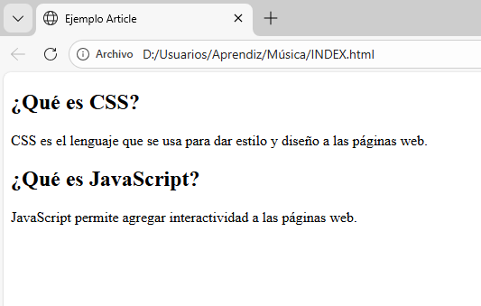
Buenas practicas: Debe poder leerse de forma independiente.
<aside>
Definicion: Contenido secundario o complementario.
Apertura y cierre:
<aside> ... </aside>
Captura visual:
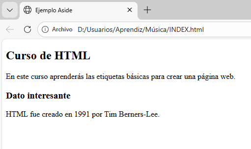
Buenas practicas: No debe contener el contenido principal.
<footer>
Definicion: Define el pie de pagina o seccion.
Apertura y cierre:
<footer> ... </footer>
Captura visual:
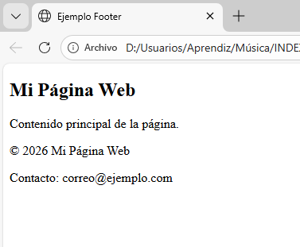
Buenas practicas: Puede contener informacion de contacto o derechos.
Texto y Contenido
Las etiquetas de texto permiten estructurar la informacion escrita dentro de una pagina web.
Sirven para organizar titulos, parrafos, enfasis y separaciones visuales.
La mayoria tienen apertura y cierre.
<h1>
Definicion: Representa el encabezado mas importante de la pagina.
Apertura y cierre: <h1> ... </h1>
Para que sirve: Se usa para el titulo principal del contenido.
<h1>Titulo Principal</h1>
Ejemplo de h1
Captura visual:
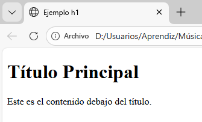
Buenas practicas: Solo debe existir un h1 principal por pagina.
<h2>
Definicion: Subtitulo de segundo nivel.
Apertura y cierre: <h2> ... </h2>
<h2>Subtitulo</h2>
Ejemplo de h2
Captura visual:
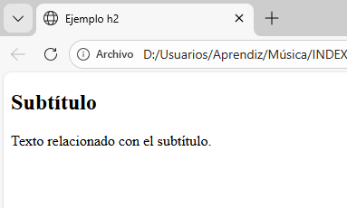
Buenas practicas: Debe respetar la jerarquia de encabezados.
<p>
Definicion: Define un parrafo de texto.
Apertura y cierre: <p> ... </p>
<p>Este es un parrafo</p>
Ejemplo de parrafo
Captura visual:
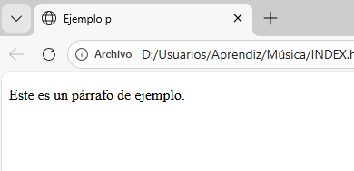
Buenas practicas: No usar br repetidamente para separar texto.
<span>
Definicion: Contenedor en linea sin significado semantico.
Apertura y cierre: <span> ... </span>
<span>Texto resaltado</span>
Ejemplo: Texto en rojo
Captura visual:
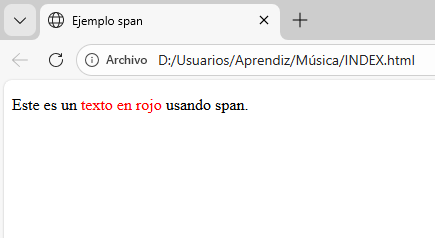
Buenas practicas: Usar para aplicar estilos con CSS.
<strong>
Definicion: Indica importancia fuerte en el texto.
Apertura y cierre: <strong> ... </strong>
<strong>Importante</strong>
Ejemplo funcional: Texto importante
Captura visual:
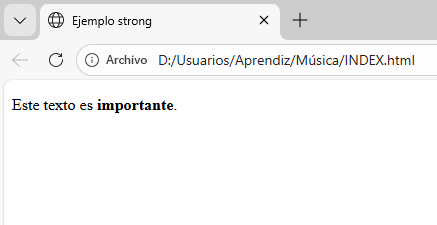
Buenas practicas: Usar para relevancia semantica, no solo estilo.
<em>
Definicion: Indica enfasis en el texto.
Apertura y cierre: <em> ... </em>
<em>Enfasis</em>
Texto con enfasis
Captura visual:
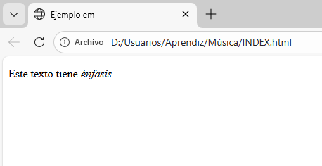
Buenas practicas: Usar cuando la palabra cambia el sentido al enfatizarla.
<br>
Definicion: Inserta un salto de linea.
Tipo: No tiene etiqueta de cierre.
Linea 1<br>Linea 2
Linea 1
Linea 2
Captura visual:
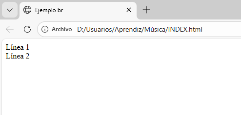
Buenas practicas: No usar multiples br para separar parrafos.
<hr>
Definicion: Inserta una linea horizontal que separa contenido.
Tipo: No requiere cierre.
<hr>
Captura visual:
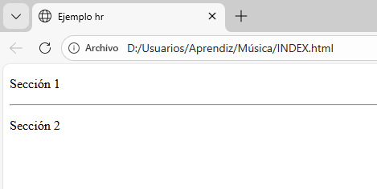
Buenas practicas: Usar para dividir secciones tematicas.
Listas en HTML
Las listas permiten organizar informacion en forma ordenada o desordenada.
Existen listas no ordenadas, ordenadas y de definicion.
<ul>
Definicion: Crea una lista no ordenada (con viñetas).
Apertura y cierre: <ul> ... </ul>
Para que sirve: Mostrar elementos sin orden numerico.
<ul>
<li>Elemento 1</li>
<li>Elemento 2</li>
</ul>
Captura visual:
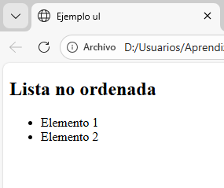
Buenas practicas: Siempre debe contener etiquetas <li>.
<ol>
Definicion: Crea una lista ordenada (numerada).
Apertura y cierre: <ol> ... </ol>
<ol>
<li>Paso 1</li>
<li>Paso 2</li>
</ol>
- Paso 1
- Paso 2
Captura visual:
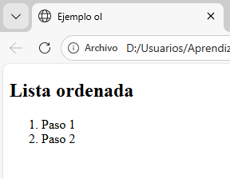
Buenas practicas: Usar cuando el orden sea importante.
<li>
Definicion: Define un elemento dentro de una lista.
Apertura y cierre: <li> ... </li>
Para que sirve: Representa cada item individual.
Captura visual:
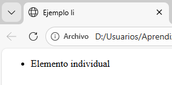
Buenas practicas: Solo debe usarse dentro de ul u ol.
<dl>
Definicion: Lista de definiciones.
Apertura y cierre: <dl> ... </dl>
<dl>
<dt>HTML</dt>
<dd>Lenguaje de marcado</dd>
</dl>
- HTML
- Lenguaje de marcado
Captura visual:
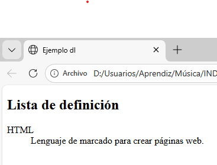
Buenas practicas: Ideal para glosarios.
<dt>
Definicion: Termino dentro de una lista de definicion.
Apertura y cierre: <dt> ... </dt>
Buenas practicas: Debe ir dentro de <dl>.
<dd>
Definicion: Describe el termino definido en <dt>.
Apertura y cierre: <dd> ... </dd>
Buenas practicas: Siempre debe acompañar a un <dt>.
Tablas en HTML
Las tablas permiten organizar informacion en filas y columnas.
Son utiles para mostrar datos estructurados como horarios, listas de productos o calificaciones.
<table>
Definicion: Contenedor principal de una tabla.
Apertura y cierre: <table> ... </table>
<table>
Contenido
</table>
Buenas practicas: Usar solo para datos tabulares, no para diseño.
Captura visual: (Agregar imagen aqui)
<thead>
Definicion: Agrupa el encabezado de la tabla.
Apertura y cierre: <thead> ... </thead>
Buenas practicas: Contiene filas con <th>.
Captura visual: (Agregar imagen aqui)
<tbody>
Definicion: Agrupa el cuerpo principal de la tabla.
Apertura y cierre: <tbody> ... </tbody>
Buenas practicas: Contiene filas con datos (<td>).
<tr>
Definicion: Define una fila dentro de la tabla.
Apertura y cierre: <tr> ... </tr>
Buenas practicas: Puede contener <th> o <td>.
<th>
Definicion: Celda de encabezado.
Apertura y cierre: <th> ... </th>
<th>Nombre</th>
Buenas practicas: Se usa dentro de <thead> o primera fila.
<td>
Definicion: Celda de datos.
Apertura y cierre: <td> ... </td>
<td>Juan</td>
Buenas practicas: Contiene informacion regular.
Ejemplo funcional completo
<table border="1">
<thead>
<tr>
<th>Nombre</th>
<th>Edad</th>
</tr>
</thead>
<tbody>
<tr>
<td>Ana</td>
<td>20</td>
</tr>
</tbody>
</table>
Captura visual: (Agregar imagen aqui)